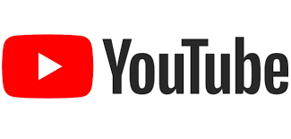

Google

Lanzada el 4 de septiembre de 1998 por Google LLC
Google LLC es una compañía principal subsidiaria de la estadounidense Alphabet la cual se especializa en productos y servicios relacionados con internet, software, dispositivos electrónicos y otras tecnologías. Su producto principal es el motor de búsqueda de contenido en internet del mismo nombre, aunque ofrece también otros productos y servicios: como su servicio en la nube, Google Drive, el correo electrónico, Gmail, sus servicios de mapas Google Maps, Google Street View y Google Earth, el sitio web de vídeos YouTube, entre otros.
- Java
- JavaScript
- Closure
- Ajax
- HTML5
- BigTable
- Colossus
YouTube

Lanzada el 14 de febrero de 2005 por tres antiguos empleados de PayPal. Actualmente pertenece a Google LLC
YouTube es un sitio web de origen estadounidense dedicado a compartir videos. Presenta una variedad de clips de películas, programas de televisión y vídeos musicales, así como contenidos amateur como videoblogs y YouTube Gaming. Las personas que crean contenido para esta plataforma generalmente son conocidas como youtubers. Fue creado por tres antiguos empleados de PayPal en febrero de 2005 y, en octubre de 2006 fue adquirido por Google, LLC. a cambio de 1658 millones de dólares y ahora opera como una de sus filiales. Es el sitio web de su tipo más utilizado en internet.
- HTML5
- Adobe Flash
- C++
- Python
FaceBook

Lanzada el 4 de febrero de 2004 por Mark Zuckerberg, junto con otros estudiantes de la Universidad de Harvard
Facebook es un servicio de redes y medios sociales en línea estadounidense con sede en Menlo Park, California. Su sitio web fue lanzado el 4 de febrero de 2004 por Mark Zuckerberg, junto con otros estudiantes de la Universidad de Harvard y compañeros de habitación, Eduardo Saverin, Andrew McCollum, Dustin Moskovitz y Chris Hughes. Pertenece a la empresa Meta que incluye otros servicios informáticos y de redes sociales. Está disponible en español desde el 11 de febrero de 2009. Es una plataforma que funciona sobre una infraestructura de computación basada en sistemas GNU/Linux, usando el conjunto de tecnologías LAMP, entre otras. Inicialmente, los fundadores limitaron la membresía del sitio web a los estudiantes de Harvard, pero después lo ampliaron a instituciones de educación superior en el área de Boston, en las escuelas de la Ivy League y en la Universidad Stanford. Asimismo, gradualmente agregó soporte para estudiantes en varias otras universidades, y finalmente a estudiantes de secundaria. Desde 2006, se le ha permitido convertirse en usuario registrado de Facebook a cualquier persona que diga tener al menos 13 años, aunque según las leyes locales este requisito varía. El nombre proviene de los directorios de fotos personales que a menudo se entregan a estudiantes universitarios estadounidenses. En febrero de 2012 salió a bolsa mediante una oferta pública de venta (OPV), alcanzando una valoración de 104 mil millones de dólares, la más alta para una empresa que empieza a cotizar. Comenzó a vender acciones al público tres meses después, pero la mayoría de sus ingresos los obtiene de los anuncios que aparecen en pantalla.
- PHP
- Java
- C++
- Hack
- Erlang
- Python
- Haskell
- Dlang
- ReactJS
Instagram
Lanzada el 6 de octubre de 2010 por por Kevin Systrom y Mike Krieger
Instagram es una aplicación y red social de origen estadounidense, propiedad de Meta. Creada por Kevin Systrom y Mike Krieger, fue lanzada el 6 de octubre de 2010. Ganó rápidamente popularidad, llegando a tener más de 100 millones de usuarios activos en abril de 2012 y más de 300 millones en diciembre de 2014. Fue diseñada originalmente para iPhone y a su vez está disponible para sus hermanos iPad y iPod con el sistema iOS 3.0.2 o superior. A principios de abril de 2012, se publicó una versión para Android, y en 2013 se lanzó la versión beta para Windows Phone y oficial para Windows 10 en 2016. Instagram también posee un medio de comunicación privado para hablar llamado Instagram Direct, y también cuenta con una función llamada Historias (en inglés, Stories) donde todas las personas pueden publicar fotografías y vídeos temporales a su perfil, agregando variados filtros y efectos, con una duración máxima de permanencia de 24 horas; además cuenta con otra opción que permite guardarlas en el perfil permanentemente para que puedan ser vistos, como «Historias destacadas». Esta característica permite a los usuarios una función de videos en directo, que también pueden ser guardados para ver con posterioridad y a través de los que pueden interactuar con otros seguidores; compartir gifs; crear y editar reels e incluso hacer videollamadas, una función muy utilizada por los usuarios.
- Django
- Gunicorn
- Fabric
- PostgreSQL
- Gearman
- Danga
- Munin
- Pingdom
- PagerDuty
- Sentry
X (Twitter)

Lanzada el 21 de marzo de 2006 Jack Dorsey
Twitter (X) es un servicio de microblogueo, producto de X Corp. Desde su creación en marzo de 2006 por Jack Dorsey y su lanzamiento en julio del mismo año, esta plataforma ha adquirido una amplia popularidad a nivel global. Se estima que cuenta con más de 500 millones de usuarios, generando diariamente alrededor de 65 millones de tuits, y gestionando más de 800.000 peticiones de búsqueda cada día.[¿cuándo?] Ha sido denominado como el «SMS de Internet». La red permite enviar mensajes de texto plano de corta longitud, con un máximo de 280 caracteres (originalmente 140), llamados tuits o Tweets (aunque esta última acepción no está recogida en la RAE), que se muestran en la página principal del usuario. Los usuarios pueden suscribirse a los tweets de otros usuarios a esto se le llama seguir y a los usuarios abonados se les llama seguidores, y a veces tuips Twitter + peeps, seguidores novatos que aún no han hecho muchos tuits.
- Java
- Spring
- Hibernate
- Apache Kafka
- JavaScript
- HTML
- Apache Storm
- AWS